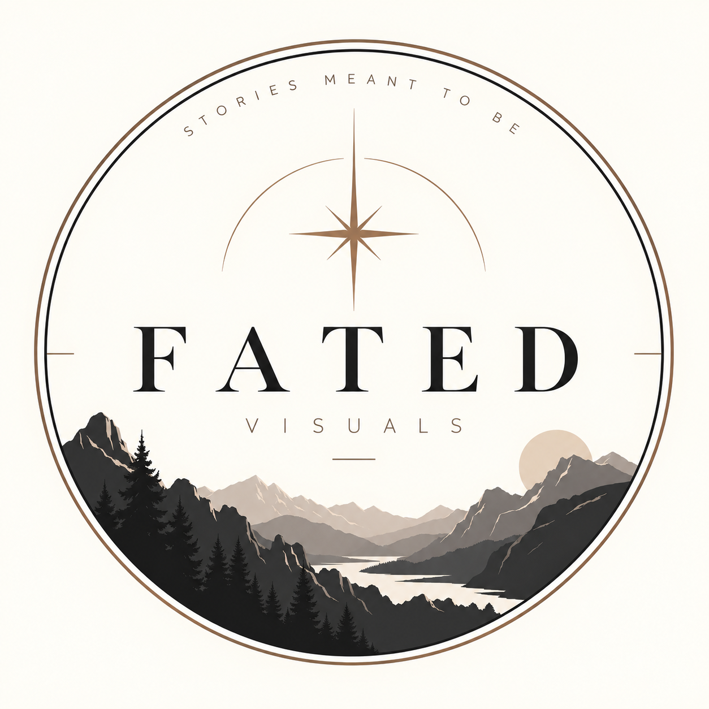

Cinemático
Luz, profundidad, paisaje y composición al servicio de la historia.
Fotografía cinematográfica de parejas · Madrid
Imágenes íntimas, naturales y con atmósfera. Fotografías que se sienten como un recuerdo de película.

Fated Visuals nace con una idea sencilla: una historia de pareja no debería parecer una sesión de fotos, sino un fragmento de algo que ya existía antes de que llegara la cámara.
La dirección visual mezcla emoción, naturaleza, movimiento y una estética cinematográfica inspirada en escenas que podrían pertenecer a una película.
Luz, profundidad, paisaje y composición al servicio de la historia.
Gestos reales, proximidad y momentos que no necesitan ser forzados.
Madrid y alrededores como escenario: sierra, campo, bosque y ciudad.
Estoy construyendo las primeras historias de Fated Visuals. Esta galería irá creciendo con sesiones reales de pareja realizadas en Madrid y alrededores.
“Stories meant to be.”
Si quieres una sesión de pareja con una estética natural y cinematográfica, cuéntame vuestra idea.